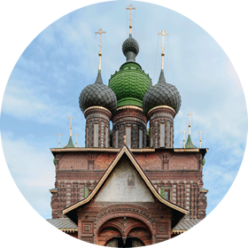

Церковь Иоанна Предтечи
|

фотографии
|

план храма
|
Теперь, после знакомства с тремя церквями, построенными тщанием отдельных ярославских семей на берегу Волги, обязательно нужно отправиться на другой берег речки Которосли, к церкви Усекновения главы Иоанна Предтечи в Толчкове. Название слободы было связано с важным в кожевенном производстве процессом толчения ивовой коры. В отличие от памятников на волжской набережной этот храм был построен не одной семьёй, а «мирским строением», то есть в складчину, тем не менее достаточно быстро — с 1671 по 1687 год, а расписан он был всего за год — с 5 июня 1694 по 6 июля 1695 года.
Церковь в Толчкове можно считать одним из символов расцвета города в XVII веке, когда не только отдельные богатые купеческие семьи, но и община, состоящая из купцов и ремесленников, могла возвести такой величественный храм. Причём это была не единственная церковь в этой слободе — недалеко стоит Фёдоровская церковь, построенная примерно в это же время. Здесь явно сказался соревновательный дух, только уже не отдельных купеческих фамилий, а слобод.
Церковь в Толчкове представляет собой целый ансамбль, в который входят отдельно стоящая 45‑метровая колокольня-«свеча» с шатровым завершением и святые ворота, ныне отделяющие территорию церкви от лакокрасочного завода, находящегося с ней в непосредственном соседстве. Особенностью архитектурного решения является то, что приделы храма, по ярославской традиции расположенные на восточных концах галереи, имеют равную с основной частью кровли высоту, и восточный фасад предстаёт единым объёмом, увенчанным сразу пятнадцатью главами. Все пять апсид снаружи покрыты росписью, имитирующей бриллиантовый руст, подобный тому, который украшает фасад Грановитой палаты Московского Кремля. Мастера, возводившие церковь, несомненно, рассчитывали на впечатление, производимое ею со стороны переправы через Которосль, на месте которой стоит и современный мост. Декоративные элементы церкви выполнены с помощью небывалого разнообразия лекального (то есть сделанного по лекалам) кирпича и изразцов. В этом памятнике узорочье, свойственное русской и, в частности, ярославской архитектуре XVII века, достигло апогея. То же можно сказать и о внутренних росписях, избыточно полных по иконографии и включающих в себя такие уникальные для стенописи сюжеты, как Четьи минеи — изображение всех почитавшихся в России святых по месяцам (на нижнем ярусе северной и южной стен церкви). Традиционное изображение Страшного суда на западной стене заменено более поэтическим и светлым ветхозаветным сюжетом из Песни песней царя Соломона. По объёму изображённых сюжетов и их полноте девятиярусная фреска церкви Иоанна Предтечи превосходит росписи всех ярославских храмов. Причём при всей подробности трактовки бытовых деталей обличение человеческих грехов становится лейтмотивом росписей, в которых — то там, то тут — взгляд натыкается на сцены возмездия за грехи, на скелеты, символизирующие смерть. Но благодаря торжественности зрелища расписанных стен и сводов общее впечатление от фресок церкви Иоанна Предтечи — не испуг, а восторг, который вызывает это живописное великолепие.